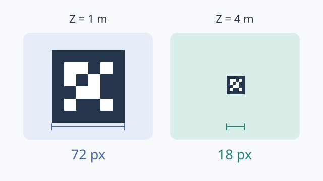

序言
看见一张方形标记，我们能认出它，还能猜到它离镜头有多远。识别编号和测量距离其实需要两类输入。前者靠图案解码，后者还需要准确的镜头参数，以及一把真的尺。
用投影把四个角连起来
AprilTag 的检测器会给出标记家族、编号和四个检测角点在图片中的位置。量出这四个角点所对应的实际边长，就能在标记平面上为每个角写一个三维坐标。打印纸外侧常有白色留边，量尺寸时要对照标签家族的检测边界。如果打印驱动把页面“适合纸张”而缩放了，写在设计图上的边长就不能充当实测边长。
已知相机内参之后，可以尝试一个旋转和一个平移，把四个角从标记坐标变到相机坐标，再按相机模型投成四个像素。预测角点和检测角点越接近，这一组姿态就越符合照片。根据一组三维点及其二维投影估计位姿叫 PnP。使用前还要弄清求出的变换方向，以及输入角点和相机模型是否都对应同样的裁剪、缩放和畸变处理。
四个有顺序的角还有一个作用。若把只量了宽度的纸片原地转一小角度，宽度几乎不变，四个角的位置却会变化。可以在纸背标出一条指向标签上方的箭头，并给相邻两角编号。检测结果旋转了 90 度时，顺着编号观察能分清标签真的转动了，还是程序把一个角当成了另一个角。
正视时可以先拿尺估一遍
当标记居中、近乎正对相机，四角深度相近，可用相似三角形估算。若真实边长 0.12 米，横向焦距 600 像素，画面中两角横向大约相距 72 像素，光轴方向的深度约为 600 × 0.12 ÷ 72 = 1 米。若把纸张留边也算进去写成 0.15 米，估出的距离会变成 1.25 米。在尺寸写错的模型里，投影出的边长却仍可与原图一致。这解释了为什么一张重投影叠加图不能代替外部尺度检查。
把标记移到远处，宽度缩到 18 像素，本来对应 4 米。假如角点定位误差让宽度变成 17 像素，近似距离会变成 4.24 米。同一个像素的偏差在远处影响更大。标记明显倾斜时，应该把完整的四角交给平面位姿求解，不宜继续按可见宽度套用正视估算。


标签在镜头前，相机在标签的哪里？
PnP 常返回标记到相机的变换。写成 p相机 = R × p标记 + t，把标记中心 (0,0,0) 代入，得到它在相机坐标中的位置 t。要回答题目中相机在哪里，则要让相机自身的坐标等于零，解出它在标记系里的位置 −Rᵀt。旋转的逆是转置 Rᵀ；直接返回 t 描述的是另一处原点。
先用同轴的一维练习检查符号。若约定标签原点在相机的正 Z 方向一米，且本例两套轴同向，标签中心在相机系的 Z 为 +1 米，相机中心在标签系的 Z 为 −1 米。真实标签的法向约定可能不同，要从两套坐标轴重新代入；不要把这个负号照搬成某个库的固定答案。
让测量有可以对照的答案
固定相机，把标记中心移动到几个量好的位置，分别拍正视、轻微倾斜和较大倾角。保留原图、检测角点和重投影点，并记录标记占据多少像素。还要分清测量的“距离”是沿光轴的 Z，还是相机中心到标签中心的直线长度。板中心离开画面中央后，这两个数会出现可解释的差别。
平面目标较小且接近正视时，角点噪声可能让不同姿态在图像上的投影很相似。逐帧估计若突然翻转，可以观察连续帧的角点、候选解和先前姿态是否一致。若距离在各个位置都按相似比例偏长，先查打印尺寸和内参缩放；仅在倾斜或远处波动，再去核对角点清晰度、模糊和遮挡情况。
试着把标签向侧面平移，让它在相机系中的位置为 (0.30,0,1.00) 米。沿光轴深度仍然是 1.00 米，斜着拉尺量到中心则约为 1.044 米。看到这四厘米差值时，先画出尺的两个端点，再决定要比较的量。